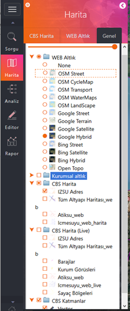
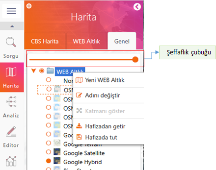
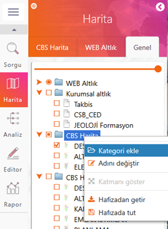
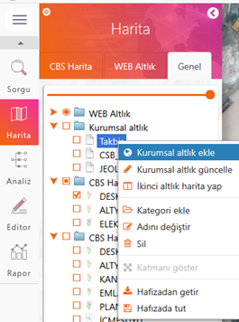
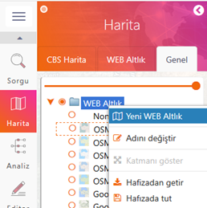
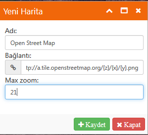
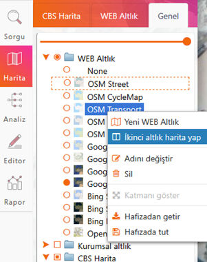
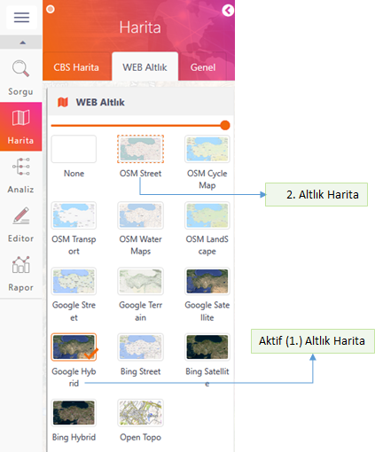
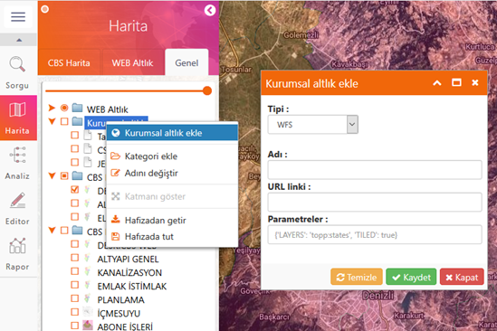
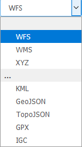

ODAGIS+ Web Harita > Genel sekmesi tüm CBS Haritaları, Web ve Kurumsal Altlık Haritalarla, sorgu veya edit işlemi sonucunda oluşturulacak tabakaların ağaç görünümünde bir arada gösterildiği paneldir. Bu panel esas itibari ile tüm harita ve tabakaların bir arada yönetilebildiği bir yerdir. Sadece Web Altlık Haritaları tek seçimli (radio button) butonlar şeklinde iken diğer harita ve tabakalar birden çok seçimli olarak tasarlanmıştır.
  
Temel olarak aktif harita seçme, yeni harita/tabaka oluşturma, silme, isim değiştirme gibi işlemler bu panel üzerinden sağ klik menüleri ile yapılmaktadır.
Web Altlık:
Açık Veri kapsamındaki web haritalarını altlık olarak görüntülemeyi sağlayan bölmedir.
Yeni Web Altlık Oluşturma:
Yeni Web Altlık Haritası oluşturma işlemi klasör üzerinde sağ klik "Yeni Web Altlık" komutu ile açılan formda Altlık adı, bağlantı linki ve max. zoom değeri verilerek yapılır. Bu işlemler sadece Yönetici yetkisine sahip kullanıcılar tarafından yapılabilmektedir.
 >> 
İkinci Altlık Harita Yapma :
2.Altlık Harita, mevcut aktif altlık haritanın altında gizli olarak tutulan şeffaflaştırma veya kıyaslama işlemleri sırasında görünür hale getirilen haritadır. Bu harita, Harita > "Genel" > Web Altlık bölmesi üzerinde herhangi bir haritaya sağ klik yapılarak açılan menüden "İkinci altlık harita yap" komutuyla oluşturulur.
Harita > Web Altlık bölmesinde etrafı nokta nokta işaretli harita 2. altlık harita olarak görüntülenecektir. Burada sağ klik "İkinci altlık harita yap komutu" olmayıp bu işlem sadece Genel sekmesinden yapılabilmektedir.
 
Kurumsal Altlık:
Kuruma ait veya diğer kurumlardan veri paylaşımı amacıyla alınan wms, wfs, xyz harita servisleri ile kml, geojson, topojson, gpx ve igc formatlarındaki haritaların kullanıcılara açılması için oluşturulan altlıklardır.
Yeni Kurumsal Altlık Oluşturma:
Yeni Kurumsal Altlık Haritası oluşturma işlemi klasör üzerinde sağ klik "Kurumsal Altlık ekle" komutu ile açılan formda Altlık tipi, Altlık adı, bağlantı linki ve paremetreler girilerek yapılır. Bu işlemler sadece Yönetici yetkisine sahip kullanıcılar tarafından yapılabilmektedir.
 
Tüm Harita/Tabaka Ağaç Yapısını Hafızada Tutma, Tekrar Hafızan Getirme:
Hafızada tutma işlemi o anda harita/tabaka ağaç yapısında yer alan dosya(kml, geojson vb) ve tabakaların yerel bilgisayarda tutulmasıdır. Oturum kapatıldıktan sonra başka bir oturumda "Hafızadan Getir" komutuyla kullanıcının harita dosyaları ve tabakaları kaydedildiği haliyle ekrana getirilecektir.